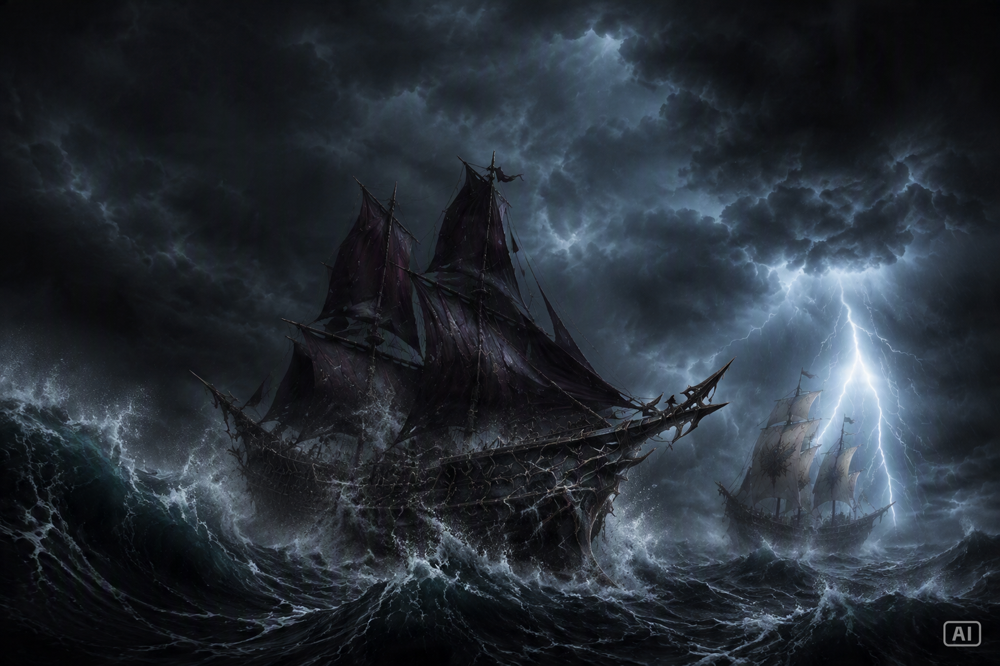
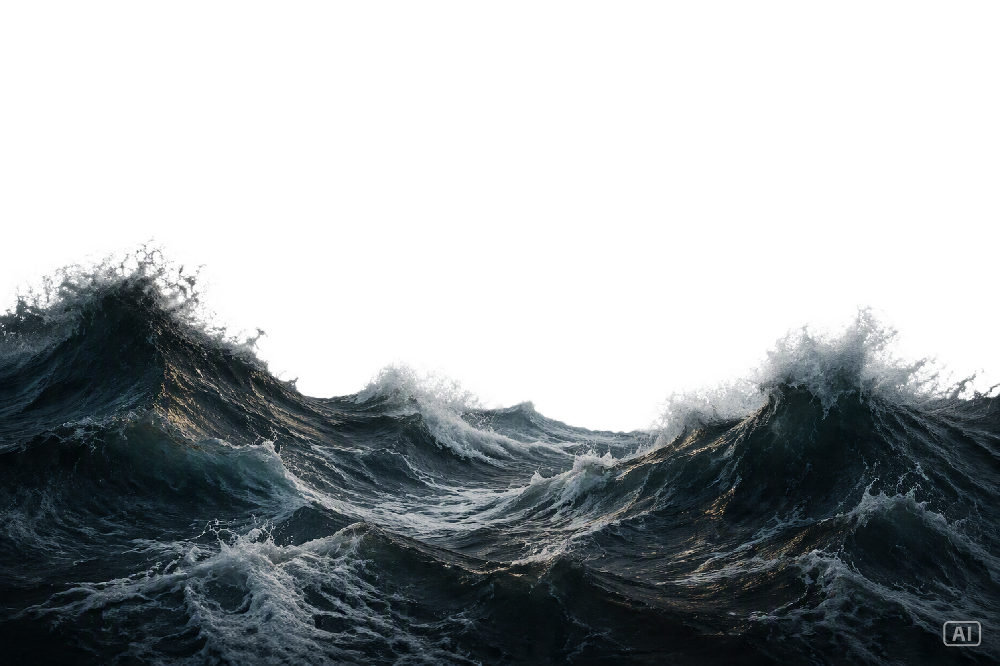
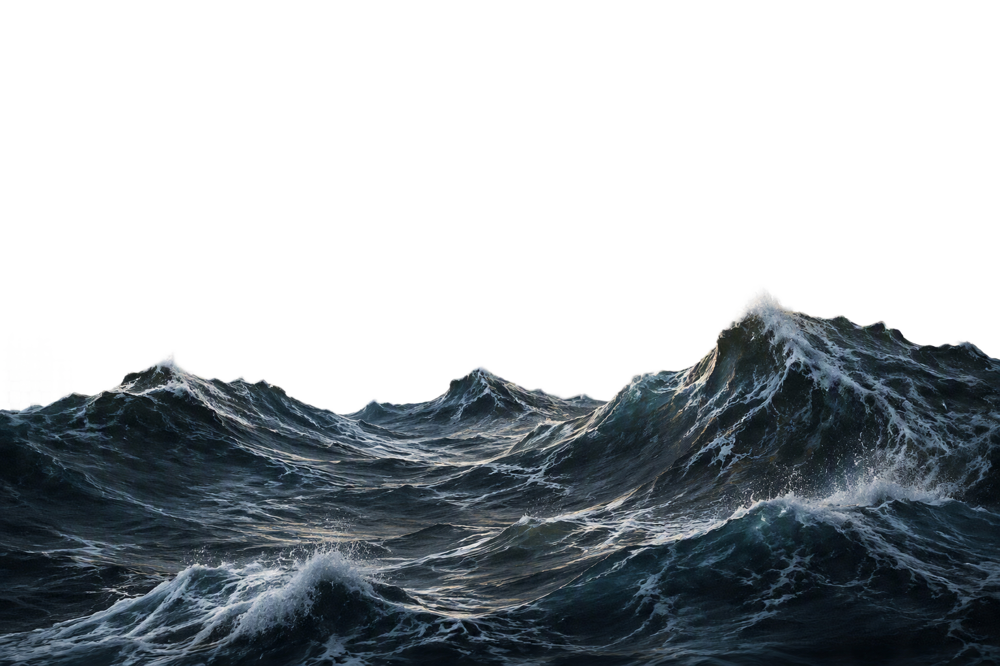
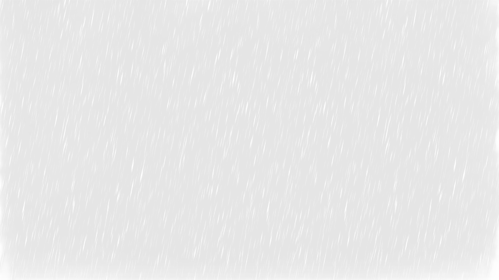

Suppléments narratifs non officiels
CHRONIQUES DE L'ANCIEN MONDE
« Les histoires oubliées ne disparaissent jamais.
Elles attendent simplement d'être racontées. »




Suppléments narratifs non officiels
« Les histoires oubliées ne disparaissent jamais.
Elles attendent simplement d'être racontées. »